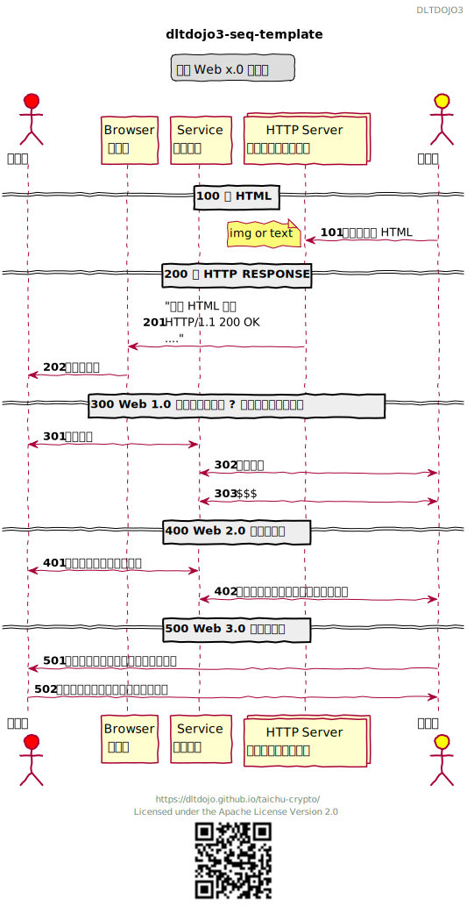

PlantUML
時序圖樣版 Sequence Diagram Template
Web x.0 的故事

@startuml
header DLTDOJO3
footer
https://dltdojo.github.io/taichu-crypto/
Licensed under the Apache License Version 2.0
<img:../images/qr-taichu-crypto.png{scale=0.5}>
end footer
title dltdojo3-seq-template
legend top
那個 Web x.0 的故事
endlegend
skinparam handwritten true
actor "消費者" as Alice #red
participant "Browser\n瀏覽器" as Browser
participant "Service\n那個平台" as SRV
collections "HTTP Server\n超文本傳輸協定服務" as HTTPD
actor "生產者" as Bob #yellow
== 100 寫 HTML ==
autonumber 101
Bob -> HTTPD : 上傳寫作檔 HTML
note left
img or text
end note
== 200 給 HTTP RESPONSE ==
autonumber 201
HTTPD -> Browser : "回傳 HTML 檔案\nHTTP/1.1 200 OK\n...."
Browser -> Alice : 解析後展現
== 300 Web 1.0 免費白吃的午餐 ? 注意力與隱私商品化 ==
autonumber 301
Alice <-> SRV : 給我內容
SRV <-> Bob : 生產內容
Bob <-> SRV : $$$
== 400 Web 2.0 免費的商品 ==
autonumber 401
SRV <-> Alice : 消費者讓平台收賣個資。
Bob <-> SRV : 消費者變成生產者，平台販售內容。
== 500 Web 3.0 去媒介平台 ==
autonumber 501
Bob -> Alice : 消費者變成生產者，買賣不經平台。
Alice -> Bob : 生產者變成消費者，買賣不經平台。
@enduml
組件圖樣板 Component Diagram Template
DLTDOJO3

@startuml
header DLTDOJO3
footer
https://dltdojo.github.io/taichu-crypto/
Licensed under the Apache License Version 2.0
<img:../images/qr-taichu-crypto.png{scale=0.5}>
end footer
title dltdojo3-comp-template
skinparam handwritten false
left to right direction
package "Docker Container" {
folder "Code Server container"{
[Code\nServer] as CS #Yellow
[mad-white\nprojects]
folder "VS Code Extension"{
[plantuml]
}
}
}
package "Kubernetes" {
folder "microk8s" {
[DNS]
[Registry]
[Storage]
}
folder "Gitops"{
[GIT gogs] as GIT #Green
[CI drone] as CI #Blue
}
}
CS --> GIT : 1. push
GIT -> CI : 2. build and test
CI --> Registry : 3. push
CI <-- Registry : 4. pull image
@enduml